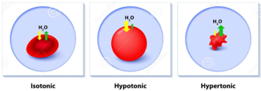

In this module, you will:
Click the title to view the tutorial
Osmosis: Osmosis is the movement of a solvent (usually water) across a semipermeable membrane from a dilute solution to a more concentrated one, aiming to equalize concentrations on both sides of the membrane.
Osmotic pressure: Osmotic pressure is the force required to prevent osmosis. It is directly proportional to the number of solute particles in solution - not the type of particles.
Osmotic vs. Tonic
When referring to biological membranes (e.g., cell membranes), the term tonicity is used instead of osmotic pressure.
Isosmotic vs. Isotonic
Classifications:
Effect on Red Blood Cells (RBCs):

Isotonic solutions are essential in pharmaceutical formulations to avoid irritation or damage to tissues. These include:
To achieve isotonicity, we use adjustment methods. The Sodium Chloride Equivalent Method is the most commonly used, though Freezing Point Depression is also employed.
This method adjusts the tonicity of a solution to be equivalent to 0.9% NaCl, which is isotonic with body fluids. The adjustment can be made using NaCl or other agents such as boric acid or dextrose.
The E-value is the amount of sodium chloride (in grams) that is osmotically equivalent to 1 gram of a given drug.
Example E-values:
You can calculate the E-value using:
Where:
Example:
A new drug, Utopical, MW 175 and dissociation factor i = 3.4, is to be provided as 325 mg in 60 mL of solution made isotonic with sodium chloride. Calculate the E value of Utopical.
Step 1: Calculate the amount of NaCl required to make the entire solution isotonic
Step 2: Calculate the amount of NaCl represented by the drug.
NaCl equivalent = Drug amount (g) × E value of the drug
Step 3: Subtract Step 2 from Step 1.
NaCl to add = Step 1 NaCl − Step 2 NaCl
Step 4: For isotonic adjustment with other agents (eg, boric acid), convert NaCl amount from step 3 to the amount of the other agent
Rx: Atropine sulfate 0.3 g
Sodium chloride, qs Make isotonic
Purified water ad 30 ml
How many grams of sodium chloride should be used in compounding the above Rx? (Atropine E value = 0.12 g)
x = 0.27 g (only NaCl used)
NaCl equivalent = Drug amount (g) × E value of the drug
0.3 × 0.12 = 0.036 g of NaCl (equivalent) [represented by atropine sulfate]
NaCl to add = Step 1 NaCl − Step 2 NaCl
0.27 g - 0.036 g = 0.234 g NaCl to make the solution isotonic
(0.234 g represents the amount of NaCl to be added to make the solution isotonic)
Rx: Atropine sulfate 0.3 g
Boric acid, qs Make isotonic
Purified water ad 30 ml
How many grams of boric acid should be used in compounding the above Rx? (Atropine E value = 0.12 g; Boric acid E value = 0.52 g)
Step 1: Calculate the amount of NaCl required to make the entire solution isotonic
x = 0.27 g (only NaCl used)
Step 2: Calculate the amount of NaCl represented by the drug(s).
NaCl equivalent = Drug amount (g) × E value of the drug
0.3 × 0.12 = 0.036 g of NaCl (equivalent) [represented by atropine sulfate]
Step 3: Subtract Step 2 from Step 1.
NaCl to add = Step 1 NaCl − Step 2 NaCl
0.27 g - 0.036 g = 0.234 g NaCl to make the solution isotonic
Step 4: For isotonic adjustment with other agents (eg, boric acid),
Convert NaCl amount from step 3 to the amount of the other agent